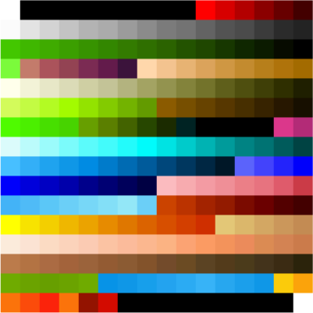
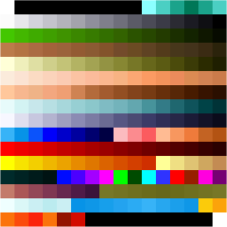
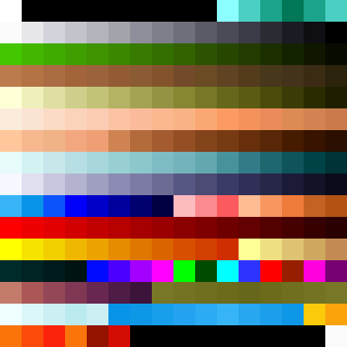

Color Palette
   |
| Color cycling effects in Yoda Stories |
Like many older games, the Desktop Adventures engine uses a color palette for rendering. That means the colors you see on the screen are not specified directly by supplying values for the three components red, green and blue, but rather by choosing one of several pre-defined colors from a color palette.
This has two major advantages. First, the amount of data needed to store an image is drastically reduced. Instead of giving three values for each pixel of an image, only one value is enough.
Second, and more interesting nowadays, changing a color in the palette affects all pixels on screen. This allows for very efficient animations and the results for cleverly composed images can be pretty impressive. Check out this site as well as Mark Ferrari's excellent talk 8 Bit & '8 Bitish' Graphics-Outside the Box to see what can be done with palette animations.
| Layout of the color palette in a hex editor |
The Desktop Adventures engine uses a palette composed of 256 24-bit BGR colors, each represented as a 32-bit integer, totaling 1024 bytes. By convention, the color at index 0 is interpreted as transparent.
Here are the color palettes used by Yoda Stories and Indiana Jones and His Desktop Adventures:
| Indy's Desktop Adventures | Yoda Stories |
|---|---|
|  |  |
As described in the links above, the Desktop Adventures engine allows for color cycling animations to make the static environments more lively. Each game has a hard-coded set of regions in the palette that shifted to make animations. Each run is either advanced every frame (fast animations) or every other frame (slower animations).
Consult the following tables for a description of the animated regions in each game:
Color Cycles in Yoda Stories
| Start | End | Length | Speed |
|---|---|---|---|
| 0A | 0F | 6 | fast |
| C6 | C6 | 2 | slow |
| C8 | C9 | 2 | slow |
| CA | CB | 2 | fast |
| CC | CD | 2 | fast |
| CE | CF | 2 | fast |
| D7 | DF | 9 | slow |
| E0 | E4 | 5 | fast |
| E5 | ED | 9 | slow |
| EE | F3 | 6 | fast |
| F4 | F5 | 2 | slow |
Color Cycles in Indy's Desktop Adventures
| Start | End | Length | Speed |
|---|---|---|---|
| A0 | A7 | 8 | fast |
| E0 | E4 | 5 | fast |
| E5 | ED | 9 | fast |
| EE | F3 | 6 | slow |
| F4 | F5 | 2 | slow |
Here are some renderings of the animations in the color palette:
| Indy's Desktop Adventures | Yoda Stories |
|---|---|
 |  |
Extracting the color palette
The color palette is contained in the .data section of the game's executable Yodesk.exe as well as the demo YodaDemo.exe. Since the exact offset might differ depending on the specific version or language of the game, the easiest way to find it is to locate the string CDeskcppDoc\0 and extract the next 1024 bytes from there. In most versions the palette seems to start at offset 0x550F0.
For Indy's Desktop Adventures a reliable way to extract the color palette is to search for the ASCII string sss, move back 103 bytes and read 0x400 bytes from there.
"Free" colors
The following colors are not referenced by any tile in Yoda Stories and could be used for UI elements in restricted environments (e.g. ScummVM or gaming console).
3, 4, 5, 6, 7, 8, 196, 197, 198, 199, 206, 246, 247, 248, 249, 250, 251, 252, 253, 254